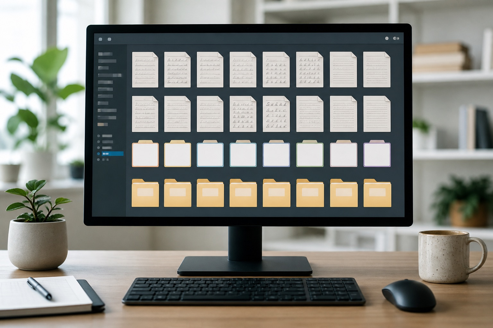

天津多页手写文件，怎样编号才不会打乱页面关系？
多页文件同时包含正文、签字和批注时，页码与来源必须对应。天津站说明模仿笔迹、模仿签名、模仿签字和笔迹鉴定资料的编号方法。

多页文件同时包含正文、签字和批注时，页码与来源必须对应。天津站说明模仿笔迹、模仿签名、模仿签字和笔迹鉴定资料的编号方法。

数字、日期和金额写法出现频率高，可先做索引，再回到原页查看上下文。本文从天津实际资料整理角度说明页面、版本与原图的保存方法。
纸张年代与书写时期应分别记录，旧样本不能与近期材料无标记地混排。本文从天津实际资料整理角度说明页面、版本与原图的保存方法。
整页、局部和补拍照片沿用同一页码，查看局部时能立即找到对应表格。本文从天津实际资料整理角度说明页面、版本与原图的保存方法。

天津站手写数字样本新增日期与编号清单，围绕天津模仿笔迹、模仿签名、模仿签字和笔迹鉴定更新服务资料。
天津模仿笔迹中的数字与日期怎么准备？签字样本要点，围绕天津模仿笔迹、模仿签名、模仿签字和笔迹鉴定介绍资料准备方法。

围绕模仿笔迹、模仿签名、模仿签字和笔迹鉴定整理实用资料。

介绍服务内容、样本要求、价格因素和办理流程。

介绍签名服务范围、签字样本要求、费用与周期。

介绍笔迹鉴定范围、对比材料、费用周期和常见问题。

介绍手写文件、个人字体、字符数量和交付方式。